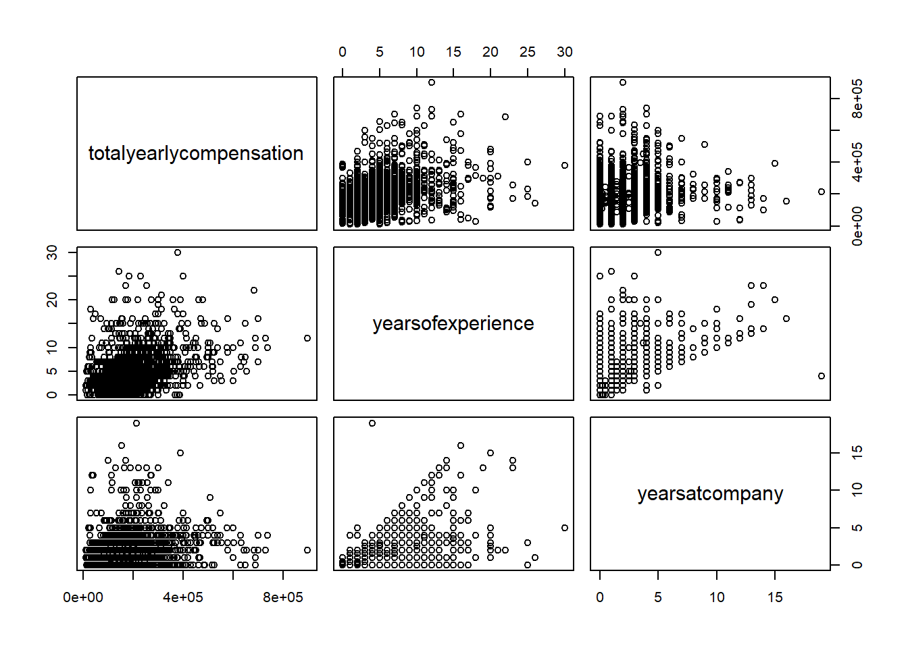
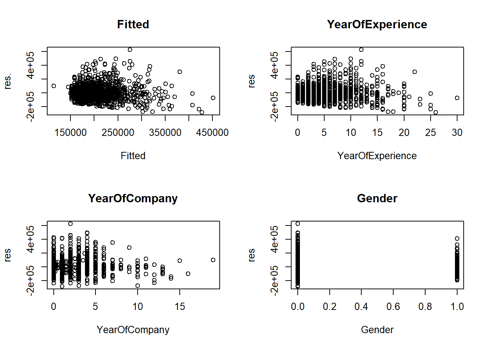
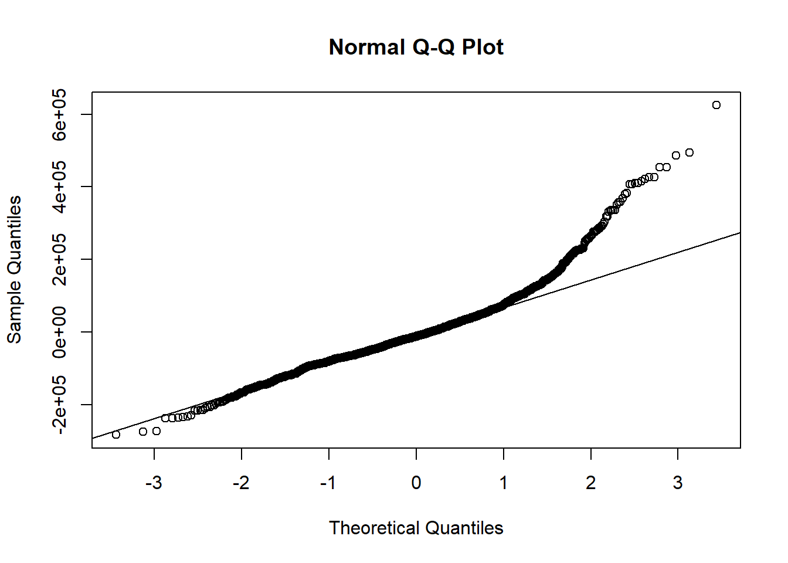

JSC370 Final Project
Rui Miao
2022-04-14
A. Introduction
There are many different factors that affects the salary level of employers working in a company, such as degree, experience, number of years working in the company, gender, and so on. In this research, we are interested in the factors affecting the salary level of Data Scientists. According to a journal Research administrator salary: association with education, experience, credentials, and gender[1], we expect a positive relationship between experience and salary level, and male tends to have a higher salary than female.
a. Purpose of the Research:
The purpose of the research comes from the fact that as statistics students, we are curious about careers related and their prospects. This will provide us with some insights into my future career path and what to expect.
The importance of the research is that most third-year students are preparing to find an internship in the near future. And salary level is one of the most essential factors that we will consider to select a job. Thus, we are interested in studying the factors which may affect the salary level.
b. Research Question:
How does salary relate to years of experience, years at the company, and gender?
We are interested in this specific research question since answering this question can give us a preliminary understanding of our possible future development working in a company. Besides, we are also interested in whether there is gender discrimination when it comes to the salaries of male data scientists and female data scientists.
Our goal for this research is to build a statistical model which is best for explaining the relationship between salary, and other possible predictors. And we may use our model to predict the salary that we may receive in out future career.
c. Background of the Dataset
This dataset[2] is found on the website Kaggle containing salary records from top companies. There are in total 62642 observations and 29 variables in our original dataset. We are interested in the question How does salary relate to years of experience, years at the company, and gender?. Thus, the variables that we are interested in are salary, yearatcompany, yearsofexperience and gender.
B. Methods
a. How and When the data was acquired
The data was scraped off levels.fyi and then cleaned by the author. The license[3] of this data set is including in the Reference section. According to the terms and conditions of the website, people may use the data for personal, non-commercial purposes (mentioned in the last sentence in the “License” section).
b. Cleaning and Wrangling the Data
library(ggplot2)
library(dplyr)
library(tidyverse)
library(psych) Levels_Fyi_Salary_Data <-
read.csv(file="Levels_Fyi_Salary_Data.csv", header=T)
datascience <- Levels_Fyi_Salary_Data %>%
filter(title == "Data Scientist")
datascience <- datascience %>%
drop_na(gender)
datascience <- datascience[!(datascience$gender=="Other"),]
datascience <-
datascience %>%
select(totalyearlycompensation, yearsofexperience, yearsatcompany, gender)There are in total 62642 observations and 29 variables in our original dataset. After filtering out unrelated titles and leaving only observations with Data Scientist as title, observations with missing values in gender and “Other” in gender are also filtered out. As one of the purposes of our analysis is to explore whether there is gender discrimination in salaries. The size of the dataset shrinks to 1718 observations. We are only interested in exploring 4 of the 29 variables including salary, yearatcompany, yearsofexperience and gender.
title: A categorical variable representing the job title of an individual in his/her company. Since we are interested in the titles related to our future careers, “title” can give us information about specific titles that we are interested in.
totalyearlycompensation: A numerical variable representing the total annual compensation of an individual with title in his/her company. According to our research question, this is our response variable. It will be denoted as salary in the following analysis for simplicity.
yearatcompany: A numerical variable representing the number of years that an individual has worked in his/her company. According to our research question, this is one of our predictors.
yearsofexperience: A numerical variable representing the number of years of an individual’s working experience. According to our research question, this is one of our predictors. gender: A categorical variable representing the gender of an individual. According to our research question, this is one of our predictors.
describe(datascience)## vars n mean sd median trimmed
## totalyearlycompensation 1 1718 199576.83 106445.38 182500.00 187973.84
## yearsofexperience 2 1718 4.90 4.09 4.00 4.37
## yearsatcompany 3 1718 1.99 2.21 1.75 1.62
## gender* 4 1718 1.79 0.41 2.00 1.86
## mad min max range skew kurtosis se
## totalyearlycompensation 77836.50 10000 900000 890000 1.57 4.44 2568.12
## yearsofexperience 2.97 0 30 30 1.58 3.63 0.10
## yearsatcompany 1.85 0 19 19 2.35 8.57 0.05
## gender* 0.00 1 2 1 -1.42 0.02 0.01As shown, total yearly compensation ranges from 10000 to 900000 which is a large interval. And we noticed that the median is slightly lower than the mean, implying that the distribution of salary might be left-skewed. And the table illustrates that the variance of salary is much larger than the variances of our predictors, which coincides with our large-interval finding of salary in Table 1.
Also the mean of year of experience is longer than the mean of year at company, which may indicates that employees usually have worked in different companies. And according to the values of skew, we noticed that all of the three numeric variables are right-skewed in different level.
datascience %>%
ggplot(aes(totalyearlycompensation)) +
geom_histogram(bins = 40, fill = "#F5B7B1", color = "#EC7063") +
theme_minimal() +
labs(title = "total year compensation",
caption = "Fig. 1 Created by Rui Miao in JSC370, Winter 2022")
datascience %>%
ggplot(aes(yearsatcompany)) +
geom_histogram(bins = 40, fill = "#FFDB6D", color = "#C4961A") +
theme_minimal() +
labs(title = "year at company",
caption = "Fig. 2 Created by Rui Miao in JSC370, Winter 2022")
datascience %>%
ggplot(aes(yearsofexperience)) +
geom_histogram(bins = 40, fill = "#ABEBC6", color = "#58D68D") +
theme_minimal() +
labs(title = "year of experience",
caption = "Fig. 3 Created by Rui Miao in JSC370, Winter 2022")
datascience %>%
ggplot(aes(gender)) +
geom_bar(fill = c("#A3E4D7", "#FADBD8"), color = c("#48C9B0", "#F1948A")) +
theme_minimal() +
labs(title = "gender",
caption = "Fig. 4 Created by Rui Miao in JSC370, Winter 2022")
Figure 1 showing the distribution of salary indicates a left-skewed trend with some outliers on the right, which have salaries over 5105dollars per year. Most values concentrate in the interval between 10000 and 4105. There are 35 observations that have a salary above 5*105. Since they are likely to affect the result of our linear model, we may remove them when fitting a linear model.
Figure 2 (years of experience) and Figure 3 (years at company) display a similar trend as Figure 1 (salary). They are even more left-skewed than salary and have a few outliers as well, for instance, the 41 people with more than 15 years of experience and the 44 people with more than 7 years at the same company.
Figure 4 (gender) illustrates a strong gender imbalance. There are fewer than 400 female data scientists and more than 1200 male data scientists in our dataset.
From the figures shown, we can see that our continuous predictors including years of experience and years at the company have similar distribution as our response variable, which justifies the use of linear regression in the analysis.
datascience$genders <-1
datascience$genders[datascience$gender=="Male"] <- 0
datascience$genders[datascience$gender=="Female"] <- 1We mutated the gender to a numeric values, where male is 0, and female is 1 so that we could interpret the gender data more easily.
c. Analyze the data
model <-
lm(datascience$totalyearlycompensation ~
datascience$yearsatcompany+
datascience$yearsofexperience+
datascience$gender)My research question can be answered using a linear regression model because we expect that there exists a linear relationship between our predictors and responses. And each row of our data represents an independent individual, which indicates that each row in our dataset should be independent to one another.
I will be using total yearly compensation (Y) as my response and use the predictors years of experience (\(X_1\)), years at the company (\(X_2\)), gender (\(X_3\)) because we are interested in the annual salary level which is total yearly compensation, and we would like to see how years of experience, years at company and gender affect the total yearly compensation.
Some anticipated issues might be that the outliers have some impact when estimating the coefficients of our model and need to be removed. Another issue is that two of our predictor variables, years of experience and years at the company might be correlated to each other in a way that years of experience = years at the company + years at other companies. In fact, there are 543 individuals whose years of experience are exactly equal to their years at the company. The correlation between our predictor variables will make our prediction less accurate.
C. Result
plot(datascience$totalyearlycompensation
~ fitted(model),
main="Y versus Y-hat",
xlab="Y-hat", ylab="Y")
abline(a = 0, b = 1)
lines(lowess(datascience$totalyearlycompensation ~ fitted(model)), lty=2)
The plot above showing the relationship between the response Y and the fitted values of Y. By observing the plot of response against the fitted values, we see that there is a non-random scatter around the identity function, indicating that there is not a simple function of a linear combination of predictors. And most of the points in the graph are having a positive values. Thus, conditional means response is not a perfect single function of a linear combination of the predictors.
pairs(datascience[,1:3])
Based on this plot, we noticed that there is some patterns between each pairs of variables. Most of the plots have points concentrating at the lower left and moving upward to the upper-right corner. Therefore, most of the associations between each possible pairs of the association is positive. Only the scatter plot for total yearly compensation and years at company seems to have an unclear association. Above this, we can conclude that conditional mean of each predictor has a linear function with another predictor.
# make all residual plots
r <- resid(model)
par(mfrow=c(2,2))
plot(r ~ fitted(model),
main="Fitted",
xlab="Fitted", ylab="res.")
plot(r ~ datascience$yearsofexperience,
main="YearOfExperience",
xlab="YearOfExperience", ylab="res")
plot(r ~ datascience$yearsatcompany,
main="YearOfCompany",
xlab="YearOfCompany", ylab="res")
plot(r ~ datascience$genders,
main="Gender",
xlab="Gender", ylab="res")
We recognized that the scatters does not spread randomly and equally. But we noticed that all the points are more equally distributed at both side of 0,. This implies that assumptions 1 is likely satisfied, which is the population errors have mean zero. However, assumption 2, 3 still do not hold perfectly, which are the population responses (equivalently errors) are somhow correlated with each other, and the population errors (equivalently responses) do not have constant spread/variance around conditional mean.
qqnorm(r)
qqline(r)
By the normal QQ-plot, there is a straight diagonal string of points along an identity function, with some deviation on both ends. This shows that there is a normality, the populations errors are normally distributed with the mean of assumption 1.
summary(model)##
## Call:
## lm(formula = datascience$totalyearlycompensation ~ datascience$yearsatcompany +
## datascience$yearsofexperience + datascience$gender)
##
## Residuals:
## Min 1Q Median 3Q Max
## -283202 -60331 -12036 42627 624604
##
## Coefficients:
## Estimate Std. Error t value Pr(>|t|)
## (Intercept) 152378.2 5870.0 25.959 < 2e-16 ***
## datascience$yearsatcompany -4525.7 1241.3 -3.646 0.000274 ***
## datascience$yearsofexperience 10520.0 673.2 15.627 < 2e-16 ***
## datascience$genderMale 5828.6 5876.8 0.992 0.321435
## ---
## Signif. codes: 0 '***' 0.001 '**' 0.01 '*' 0.05 '.' 0.1 ' ' 1
##
## Residual standard error: 99020 on 1714 degrees of freedom
## Multiple R-squared: 0.1362, Adjusted R-squared: 0.1347
## F-statistic: 90.06 on 3 and 1714 DF, p-value: < 2.2e-16This is the summary table of our model. Based on the p-values in the table, we noticed that the p-values for year of experience and year at company are extremely small, which indicates that these two are two main factors of the salary level.
D. Conclusion and Summary
The most significant factors that would affect salary are years working at company, years of experience, Gender.
The relationships between response and each predictors are as follow:
years working at company: negative
years of experience: positive
genders: positive
According to the above relationships, we are not surprising to see that if you are more experienced, you will earn more.
However, there are some interesting facts that for people works longer in a company, they will earn less. This could be caused by some extremely outliers in the dataset. Usually, employees will at least stay at the same salary level through out the duration of working at the companies.
Another funny fact is that female earns more than males. Because from many facts of gender inequality in reality, females earn less than males at the same positions, with same degree. I think this may show an improvement in the gender equality nowadays. Another reason may be the percentage of female in this dataset is much smaller than male, thus, the data of female in this dataset is less representative. However, I would like to believe that we have a more open, less descrimination working environment for female than in the past.
Overall, only according to the result, experience is the most important factors to earn more. And generally, females earns more than males when working as a datascientists.
F. Reference
[1] Shambrook, Jennifer, et al. “Research administrator salary: association with education, experience, credentials, and gender.” Journal of Research Administration, vol. 42, no. 2, fall 2011, pp. 87+. Gale In Context: Canada,
[2] “Data Science and STEM Salaries”, Kaggle.com, 2021. [Online].
Available: https://www.kaggle.com/jackogozaly/data-science-and-stem-salaries.
[3] License: According to the terms and conditions of the website, people may use the data for personal, non-commercial purposes (mentioned in the last sentence in the “License” section). This is the link to the page of terms and conditions of level.fyi:
Copyright © 2022, Rui Miao.